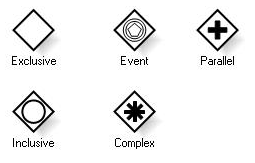
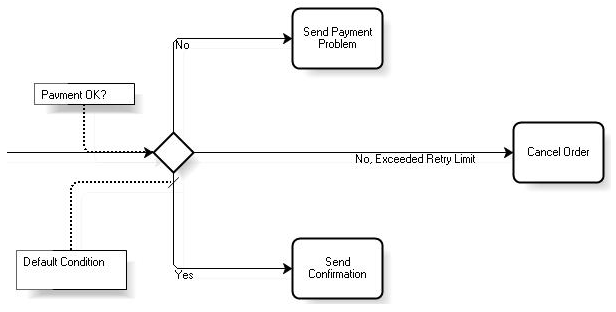
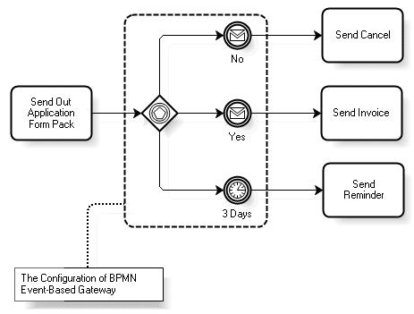
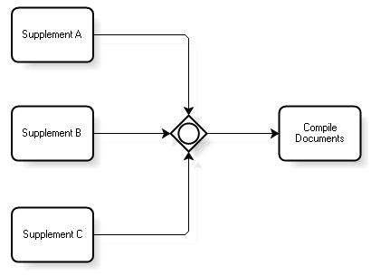
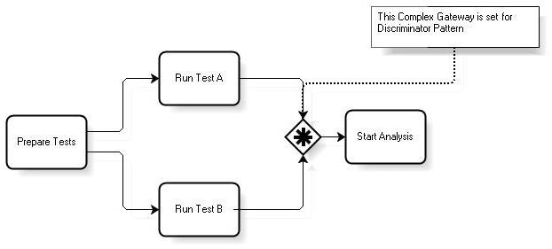

Gateways are modeling elements that control how a process diverges or converges. All Gateways are represented with a diamond shape, with different icons within to distinguish the type of Gateway. Core Gateways
Advanced Gateways
The figure below shows the symbols used to represent Gateways.  Exclusive Gateway Splitting This type of Gateway divides the flow into two or more paths but the process flow will go down only one of these paths. Conditions are expressed as Gateway attributes and can be expressed in natural language or as formal expressions. The selection of the path to follow will be based on the evaluation of the conditions set for each path. They are evaluated one at a time, in the order in which they were defined in the Gateway (which doesn't mean that their corresponding paths are evaluated as displayed in the diagram) and the path corresponding to the first condition that evaluates to true will be selected. If none of the conditions is true, the process will be stuck in the Gateway. In this case, the use of default paths is suggested. The figure below shows an example of how this type of Gateway is used:  Merging It merges the flow without making any synchronizations. For example, in the following diagram: If the flow moves on from the task 'Accept Cash or Check' to the Gateway, an instance of the task 'Prepare Package for Customer' will be automatically created; if later the flow reaches the Gateway from the task 'Process Credit Card', another instance of 'Prepare Package for Customer' will be created. Gateway Event Splitting This type of Gateway requires the use of one or more catching Intermediate Events. The valid types of events are as follows:
Receive tasks can be used instead of Message events, but they can't be mixed. The figure below shows an example of how this type of Gateway is used:  In the previous example, the flow will continue down the path corresponding to the event that occurs first. It should be pointed out that if none of the events specified occur, the process will be stuck. Therefore, a Timer event is recommended as an alternative. Merging It works in the same way as the Exclusive Gateway. Parallel Gateway Splitting It simply divides the flow in two or more parallel paths. No conditions are evaluated. Merging It works in the same way as the And-Join included in the Business Process Diagram of GeneXus X. Inclusive Gateway Splitting Its behavior is similar to the Exclusive Gateway in the sense that it allows for the creation of multiple alternative paths based on conditions imposed on those paths. The difference lies in that more than one path can be chosen, that is, all those whose corresponding conditions evaluate to true. In this case, the use of default paths is recommended in order to prevent the process from getting stuck in any situation. Merging It works similarly to a Parallel Gateway merging in the sense that it synchronizes all incoming paths. Unlike the Parallel Gateway, it only synchronizes those paths that actually reach the Gateway, which are not necessarily all the incoming paths in the diagram; this could be specific to each process instance. To illustrate this concept, let’s consider the following diagram where an Inclusive Gateway is used to merge paths:  Suppose that at a certain point there are active instances of the tasks 'Supplement A' and 'Supplement C', but not of 'Supplement B' (an instance of this task is never created in this process instance). In addition, suppose that the instance of 'Supplement A' is completed first. At that point, the flow reaches the Inclusive Gateway. Here, the Gateway is “fixed” in the other possible paths and determines that it should wait for the path of 'Supplement C'. Once this task is completed, the flow can continue towards 'Compile Documents'. If a Parallel Gateway was used in this case, the process would get stuck indefinitely in the Gateway. Complex Gateway Splitting It is similar to an Inclusive Gateway. The difference lies in that it uses a single outgoing assignment within the Gateway instead of a set of conditions over the outgoing paths. The result is the same in the sense that one or more outgoing paths will be activated. In general, one assignment has two parts: a condition and an action. When an assignment is executed, its condition is evaluated and if it is true, the action is performed; this action can be the updating a property of the process or a Data Object. In the case of a Complex Gateway, the outgoing assignment may refer to process data or its Data Objects and the status of its incoming paths (e.g. if the flow will come from a certain path in a certain process instance). For example, an outgoing assignment may evaluate process data and then select different sets of outgoing paths depending on the results of the evaluation. However, the outgoing assignment should ensure that at least one path will be chosen. Merging In this case, an incoming assignment is used when the flow reaches the Gateway. The condition may refer to the same data as in the Splitting behavior of the Complex Gateway (process data, Data Objects, etc.). If the condition evaluates to false, nothing happens except for the fact that the flow is stopped in the Gateway. If it evaluates to true, the action could be to let the flow continue or stop it. Since the use of the Complex Gateway to merge paths can vary depending on the purpose for which it is used, modelers are recommended to use text annotations to inform the diagram readers about the behavior being assigned to the Gateway. An example of use would be the discriminator pattern. In this pattern, there are two or more parallel tasks which are merged in a Complex Gateway. When one of the activities is completed, the following tasks can be started. It doesn’t matter which activity is completed first. The other tasks are completed normally but they won’t affect the process flow, that is to say, new instances of the following tasks will not be generated. For example, suppose that you have the following diagram to which the discriminator pattern is applied:  The parallel tasks would be 'Run Test A' and 'Runt Test B'. If, for example, 'Runt Test A' is completed first, the flow will immediately continue to 'Start Analysis' because it doesn’t matter which one of the two tasks is completed first. Next, when 'Runt Test B' is completed, another instance of 'Start Analysis' will not be generated. It must be made clear that this is a very general Gateway designed to enable the modeler to 'program' the desired behavior. Go to the main article - Return to the previous section - Go to the next section
|
| Backlinks | |||
| Toc:GeneXus BPM Suite | Introduction to BPMN | ||
| Introduction to BPMN - Activities | Introduction to BPMN - Events | Introduction to BPMN - Overview | Introduction to BPMN - Swimlanes |
| Model Automation |